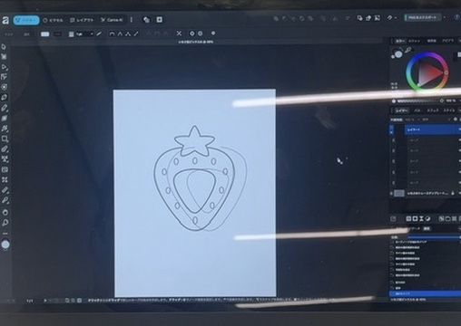
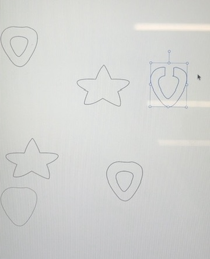
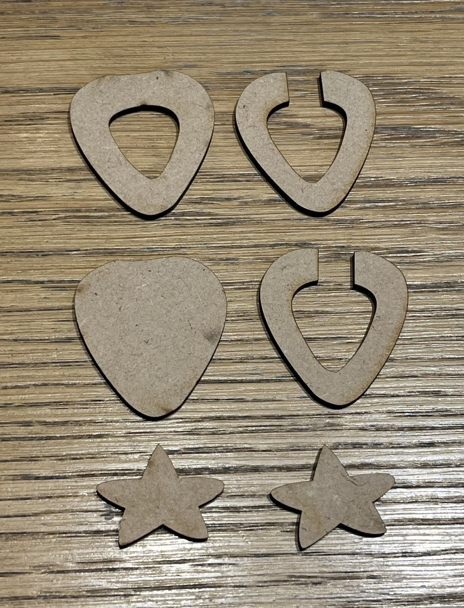
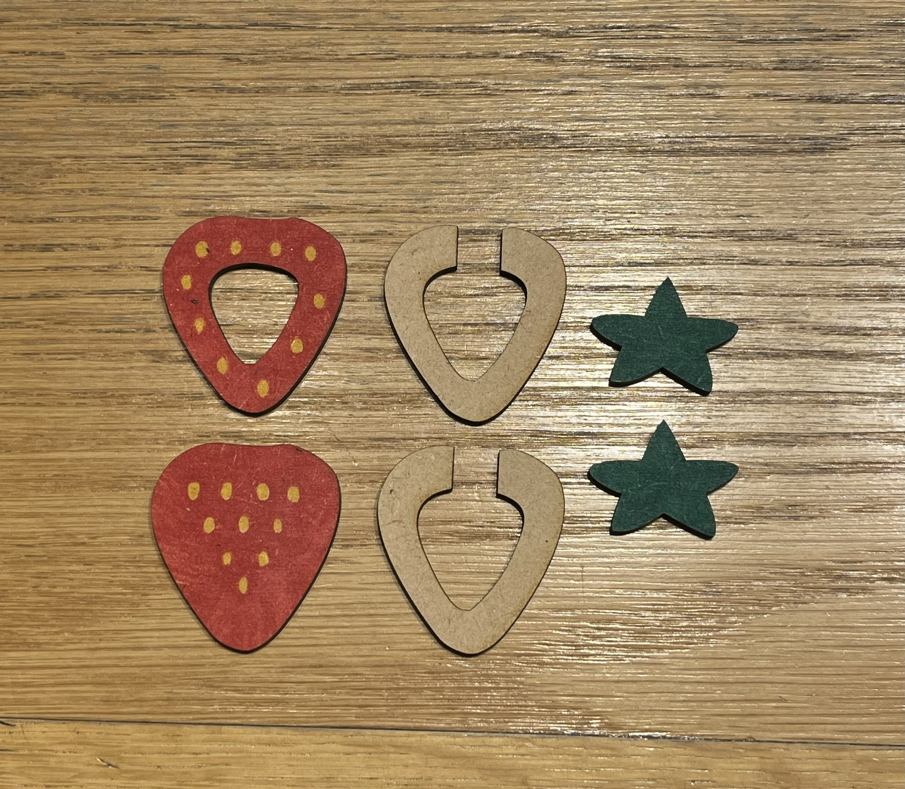
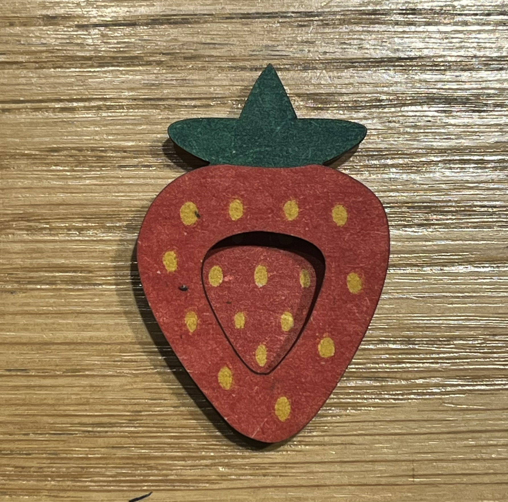
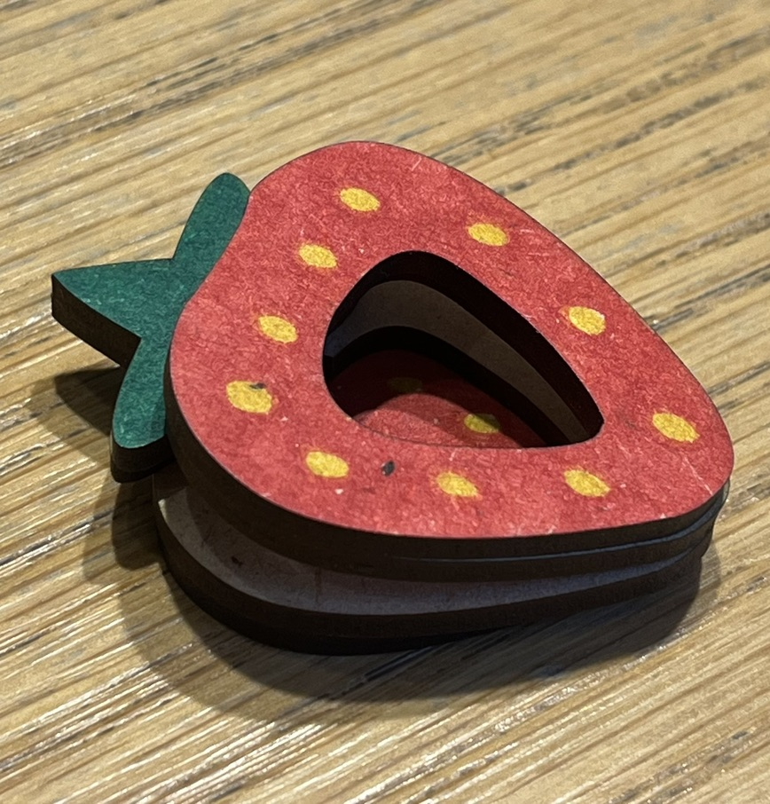

ギターピックを持ち運ぶ時に、小さくて薄いため
カバンの中で散らかってしまったり
なくしてしまったりすることがよくあると感じていました。
そこで、コンパクトにたくさんのピックをまとめることができる
可愛いケースがあればいいなと思い、
制作しようと考えました。
ギターピックを持ち運ぶ時に、小さくて薄いため
カバンの中で散らかってしまったり
なくしてしまったりすることがよくあると感じていました。
そこで、コンパクトにたくさんのピックをまとめることができる
可愛いケースがあればいいなと思い、
制作しようと考えました。
無料で使用できる「affinity」というアプリを用いて 制作に取り掛かりました。

下書きとなる見本のいちごの画像を置いてから 線を描きました。

1枚の板を重ねて立体にしようと考えたので、
いちごパーツ（前面）×1
いちごパーツ（中間）×2
いちごパーツ（裏面）×1
ヘタパーツ×2
の6パーツに分けて絵を描きました。

これらのパーツ全てレーザーカッターで切り取ると、 このようにいちごの土台ができました。

可愛くしたかったので、 中間層以外のパーツにマッキーで色を塗りました。

これら6枚を、順番通りに重ね合わせると このようにピックケースが完成しました。

横から見るとこんな感じです。
下書き機能を用いて線を描くと、
描きやすさが大幅に上がることが分かりました。
自分が持っているピックがピッタリ入るように
ケースの採寸を考える事が難しかったです。